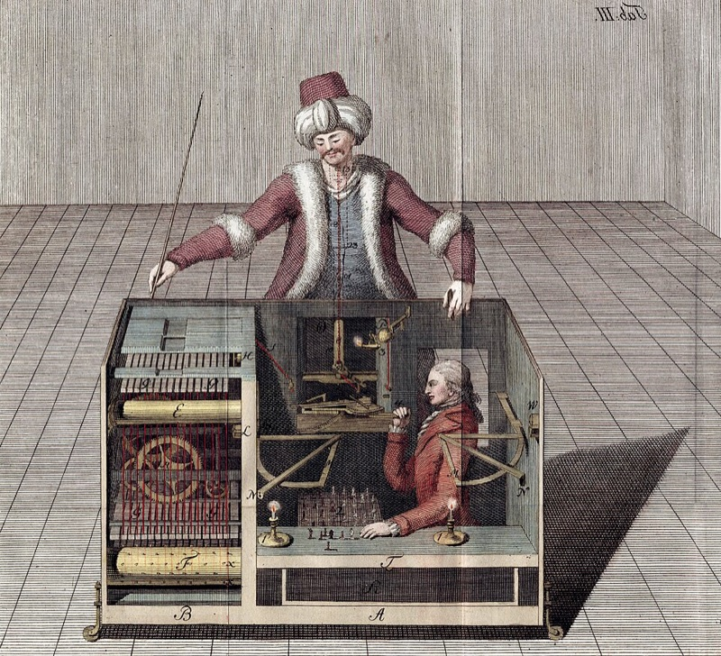

Project 6: Second Opinion

Throughout the semester, you have engaged with a broad range of questions that require making sense of complex data coming out of a range of contexts: a Catholic monastery, vehicle sales in California, your own app usage, election data, and the API data that you wrapped in a package. In this project you will hand some of that same work to Posit Assistant, an agent, and check what it does. You’ll follow its numbers back through the trace of what it did, test its code on data whose answer you know, run it a second time with one thing changed, and then clean a messy data set alongside it and compare its decisions to your own.
By completing this project, you will:
- Hand an analysis to an agent, reading each action before it runs
- Follow a number in an agent’s answer back to the tool result it came from
- Test an agent’s code on a few rows you can add up by hand
- Compare two runs that differ in exactly one thing
- Clean a data set alongside an agent and weigh its decisions against yours
- Decide what you would report, and say why
Before you start
Set up Posit Assistant. Follow the Posit Assistant guide and check that you can start a chat in Normal mode. New chats start in Auto mode, so switch every time.
Your template repo holds:
project.qmd: your report, which renders to HTML. Every part below has a section in it.run-1/data/New_ZEV_Sales_Last_updated_07-17-2026_ada.xlsx: the same workbook you used in Project 2, with a second copy inrun-2/data/for Part 5.run-3/data/state_g24_sov_data_by_g24_srprec.csv: the raw precinct vote counts you cleaned in Project 4.project-4/g24-results-by-district.xlsx: the official district totals from Project 4. Before Part 6, copy your own clean data from Project 4 (data/clean/g24-clean.csv) into this folder too.
Part 1: Your Original Answer
In Part 3 of Project 2, you checked the dashboard’s year-to-date 2026 total, its totals by fuel type, and its ZEV share. Here they are again as two questions:
- How many new ZEVs were sold in California in 2026 so far, in total and by fuel type?
- What share of all new light-duty vehicles sold in 2026 so far were ZEVs?
Copy your answers and your code for these from Project 2 into Part 1 of project.qmd, and run the code on run-1/data/. Then answer, in a sentence or two each:
- What does one row of the County sheet represent, and so how did you count vehicles?
- What does the share need for its denominator?
If your Project 2 work is missing or you now think it’s wrong, redo it here and label it as redone. Finding a mistake in your own earlier work is as good a thing to bring to Studio as finding one in the agent’s.
Part 2: Hand It Off
- Commit and push, so you start from a clean state.
- In Positron, choose File → Open Folder and open the
run-1/folder by itself, not your whole repo. The agent can read every file in the open folder, and your report already holds your answers, which it shouldn’t see. If Positron shows a Restricted Mode bar, click Manage, then Trust: the assistant can’t run code in a folder you haven’t trusted. - Open Posit Assistant, start a new chat, choose a model, and switch to Normal mode.
- Paste this prompt exactly as it is, so that runs can be compared across the class:
The County sheet of the Excel file in data/ comes from the California
Energy Commission. Answer two questions about 2026 so far:
1. How many new zero-emission vehicles were sold, in total and by
fuel type?
2. What share of all new light-duty vehicles were zero-emission?- Before you approve each call, read it and think: what will it do, and what do you expect it to print?
- When it has answered, save the trace:
- From the gear menu, Export / Import → Export as JSON, saved as
run-1/conversation.json. - Click the token counter at the bottom of the chat box (a colored dot and a count, such as
~13K) to open Session information. Under Token Usage, with Conversation selected, choose CSV → Download rows CSV, saved asrun-1/token-usage.csv. It holds the data behind the chart above it: one row per request. - Copy the code it ran into
run-1/agent-code.R, in order, unless it already saved a script there.
- From the gear menu, Export / Import → Export as JSON, saved as
- Commit and push.
In Part 2 of project.qmd, record the model, the number of tool calls you approved, and the agent’s answers to both questions as it gave them.
Part 3: Follow One Number
Choose one number from the agent’s answer, such as its 2026 count of plug-in hybrids (
PHEV), one of the fuel-type totals in its answer to question 1. Fill in a table with one row for each tool call between your question and that number:Step Tool call (the tool, and the code it ran) What came back The claim it supports 1 Quote the code and the printed results; don’t paraphrase them. If the number never appears in any result, say so: the agent predicted it rather than computing it.
Find any claim in the agent’s answer that no tool result supports, and quote it. If every claim has a result behind it, say how you checked.
The share: if the agent gave a percentage, what were its numerator and denominator, and where did the denominator come from? If it declined, what data did it say it would need, and is that what you would need?
Part 4: Check Its Work
Test the agent’s code the way you’d test a function. Copy its pipeline for the fuel-type totals into Part 4 of
project.qmdand wrap it in a function that takes a data frame. Then make a data frame of three or four rows, with the County sheet’s column names, whose answer you can work out by hand: for example, twoPHEVrows with 4 and 7 vehicles and oneElectricrow with 5. Write down the right answer, then check the agent’s function withexpect_equal(). A test that fails is a finding: keep it. The template’s chunk setserror: true, so a failing test prints its error and your report still renders.Run the agent’s code on the full data. The agent ran from inside
run-1/, so its paths start atdata/; your report runs from the repo, so change them to start atrun-1/data/, or start its pipelines fromzev, which the setup chunk has already read. Then make a table of each number: your answer, what the agent’s code gives when you run it, and what the agent reported. For each disagreement, say who is right and point to the step (in the trace, in your code, or in your test from (a)) that made the difference.
Part 5: Change One Thing
Make a second run that differs from the first in exactly one way. Choose one:
- The prompt. Same model; add a line like the following to the end of the prompt:
First establish what one row of the data represents, and show how you checked.If your first run led to a sound answer, see if you can lead it astray with a more confusing prompt. - The model. Same prompt; choose a different model.
- Nothing. Same prompt, same model, a fresh chat. Does an agent give the same answer twice?
Set it up the way you set up the first run, in a folder of its own, so the agent can’t read the first run’s files or chat. Your template’s run-2/ folder holds its own copy of the workbook. With run 1 committed, open run-2/ by itself, start a new chat in Normal mode, and run it. Save conversation.json, token-usage.csv, and agent-code.R into run-2/, and commit.
In Part 5 of project.qmd, fill in this table:
| Run | Model | What changed | Total right? | All three fuel types right? | Share | Tool calls | Tokens in | Tokens out |
|---|---|---|---|---|---|---|---|---|
| 1 | (none) | |||||||
| 2 |
For “Model”, write the model’s name as Posit Assistant’s model menu shows it, in both rows even if it didn’t change. For “Share”, write the agent’s percentage, or “declined”. For “Tokens in” and “Tokens out”, use the Input and Output totals under the chart in each run’s Session information. With GitHub Copilot’s models these counts are approximate (they start with ~); write them as shown. Then, in a few sentences: what did the change do, and with one run of each, how sure can you be?
Enter your table in the class form linked on Ed as well. In the Dec 2 lecture we’ll pool everyone’s runs.
Part 6: Clean It Together
Parts 2 through 5 had a right answer to check the agent against. Cleaning doesn’t: it’s a series of judgment calls, and in Project 4 you made your own about the 2024 precinct vote counts. Now clean the same raw file with Posit Assistant’s Cleaning mode, which audits a data set and asks you about each decision before making it, and compare its decisions with yours.
- Copy your clean data from Project 4 (
data/clean/g24-clean.csv) intoproject-4/, then commit and push. If you don’t have it, rerun your Project 4 cleaning code first. - Open the
run-3/folder by itself, so the agent can’t see your Project 4 work, and trust it if asked. - Start a new chat, choose a model, and choose Cleaning from the mode picker.
- Paste this prompt exactly as it is:
The CSV file in data/ holds vote counts from California's 2024
general election, one row per SR precinct, from the Statewide
Database. Clean it for an analysis of the votes cast for the
U.S. House in each congressional district.- When it asks you about a decision, answer as you would for your own analysis.
- When it’s done, save the trace as
run-3/conversation.jsonand its code asrun-3/agent-code.R, and have it write the clean data torun-3/data/clean/. Commit and push.
In Part 6 of project.qmd, compare the two cleanings. For each decision where you and the agent differed, show what each of you did, how many rows it affected, and what it does to the data, with the evidence for it: a count, a table, or a quote from the trace. Then check both clean data sets against the official district totals in project-4/g24-results-by-district.xlsx, as you did in Part 3 of Project 4.
Part 7: Your Verdict
In a paragraph or two: what would you publish as the answers to Part 1’s two questions? Would you trust this agent to do Project 2 for you, or to clean a data set with you? What advice would you give to someone learning how to use an agent so that they could use one safely and effectively?
Submitting and Studio
Render project.qmd to HTML, then commit and push your report, all three run folders, the project-4/ folder, and the rendered report before your Project Studio the week of Nov 30.